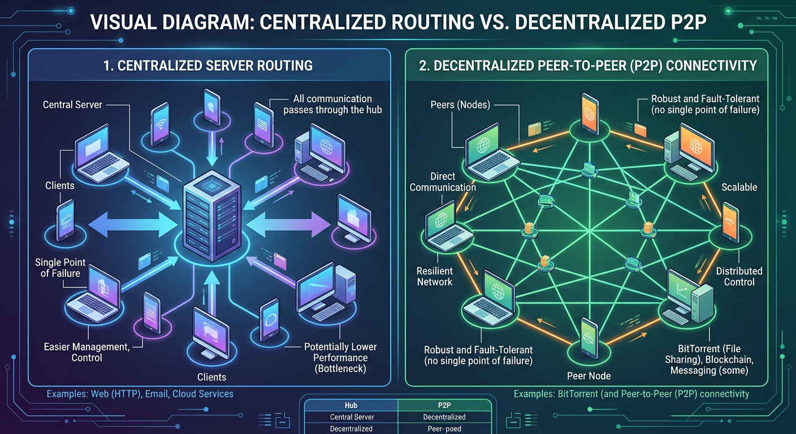
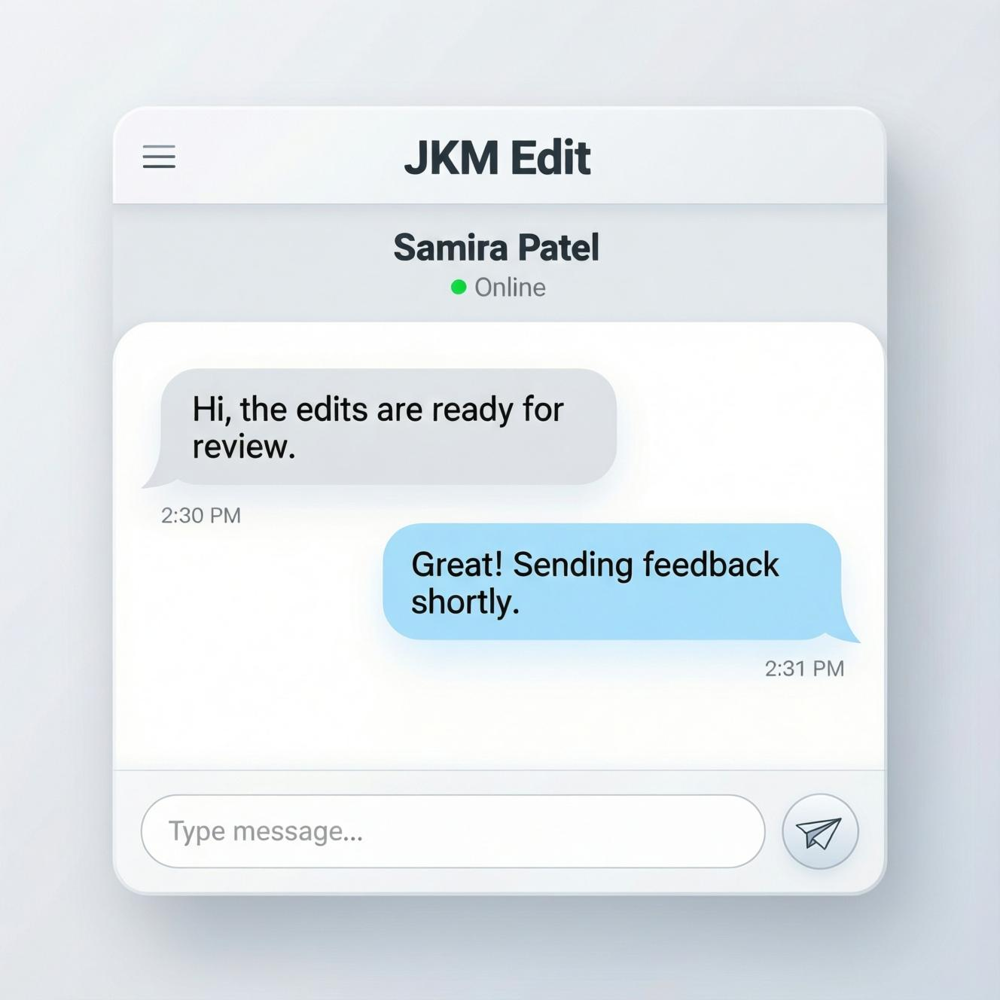

Peer-to-Peer Chat — Secure Direct Communication Without Middlemen
Experience Private, Instant, and Decentralized Messaging With Modern Peer-to-Peer Chat Technology
Introduction
In today’s digital ecosystem, online communication has become a critical part of both personal and professional workflows. From business discussions and file transfers to customer support and collaboration, messaging systems are now deeply integrated into everyday operations. However, traditional messaging platforms usually depend on centralized servers that store user data, communication logs, and metadata. This creates concerns related to privacy, security, surveillance, performance limitations, and third-party control.
Peer-to-peer chat technology introduces a more advanced and privacy-focused alternative. Instead of routing messages through a centralized intermediary server, peer-to-peer communication enables users to connect directly with one another. This architecture minimizes unnecessary data exposure while improving communication efficiency, speed, and reliability. A peer-to-peer chat platform allows users to exchange messages, media, files, and information through direct encrypted communication channels. Since communication occurs directly between connected devices, users gain more control over their conversations while reducing dependence on centralized infrastructure.
At JKM Edit, the Peer-to-Peer Chat platform is designed to deliver a simplifyd, secure, and professional communication environment that prioritizes user privacy, low latency, and direct connectivity. Whether users need private conversations, internal team collaboration, temporary secure communication, or decentralized messaging workflows, the platform offers a modern solution improved for speed and simplicity.
What Is Peer-to-Peer Chat?
Peer-to-peer chat is a communication model where two or more users connect directly to exchange messages without relying entirely on a central server for message routing or storage. Unlike traditional cloud messaging systems that process and temporarily store data on external servers, peer-to-peer communication establishes direct device-to-device interaction.

This architecture reduces dependency on centralized infrastructure while improving:
- Communication privacy
- Data ownership
- Transfer speed
- Network efficiency
- Reduced server bottlenecks
- Secure direct communication
Peer-to-peer technology is widely used across:
- Secure messaging applications
- Collaboration systems
- Gaming networks
- Blockchain communication
- File-sharing systems
- Decentralized platforms
- Enterprise communication tools
JKM Edit’s Peer-to-Peer Chat tool is designed to simplify this advanced communication model for everyday users while maintaining professional-grade functionality.
Ready to upgrade your communication?
Stop worrying about third-party servers. Connect directly and securely.
Try JKM Edit Chat Now
Key Features of JKM Edit Peer-to-Peer Chat
1. Direct User Communication
Users can communicate directly without relying heavily on centralized message storage systems.
2. Enhanced Privacy
Messages remain significantly more private because communication is established directly between participants.
3. Real-Time Messaging
Peer-to-peer architecture helps reduce unnecessary routing delays and supports faster communication.
4. Temporary Secure Sessions
Users can create temporary chat environments for sensitive discussions or project-based collaboration.
5. Lightweight Performance
The platform is improved for smooth performance with minimal resource consumption.
6. Device-to-Device Connectivity
The system establishes direct communication channels between connected devices.
7. Professional User Interface
A clean and distraction-free layout improves usability for both personal and business communication.
8. Cross-Platform Accessibility
Users can access communication sessions from modern devices and browsers.
How Peer-to-Peer Chat Works
Peer-to-peer communication follows a decentralized networking model. Instead of sending every message through a central processing server, devices establish a direct communication session.
The workflow generally includes:
- User initiates a chat session
- Secure connection request is generated
- Devices establish direct communication
- Messages are exchanged instantly
- Data transmission occurs securely between peers
- Session closes after communication ends
This architecture significantly reduces unnecessary server dependency while improving communication efficiency.
Why Privacy Matters in Online Communication
Modern internet users increasingly value privacy due to growing concerns surrounding:
- Data collection
- Advertising tracking
- Communication monitoring
- Data breaches
- Cloud storage vulnerabilities
- Unauthorized data access
Traditional communication systems may retain logs, metadata, or conversation history for extended periods. Peer-to-peer communication reduces exposure by minimizing unnecessary data storage. JKM Edit focuses on privacy-oriented communication principles to help users communicate with greater confidence.
Benefits of Peer-to-Peer Chat Platforms
Faster Communication
Direct routing reduces communication latency.
Better Security
Reduced server exposure decreases potential attack surfaces.
Improved Reliability
Peer networks can continue operating efficiently even during centralized server interruptions.
Lower Infrastructure Dependency
The system reduces heavy reliance on centralized cloud infrastructure.
Reduced Operational Costs
Organizations can improve communication expenses with decentralized systems.
Greater User Control
Users maintain stronger control over communication sessions and shared information.
Professional Use Cases for Peer-to-Peer Chat
Peer-to-peer communication can support various professional environments.
Internal Business Collaboration
Teams can exchange quick project discussions securely.
Freelance Client Communication
Freelancers may use temporary private sessions for client collaboration.
Remote Team Coordination
Distributed teams can improve communication efficiency.
Technical Support Sessions
Temporary direct communication channels can simplify troubleshooting.
Secure File Coordination
Users can coordinate secure document sharing workflows.
Why Choose JKM Edit Peer-to-Peer Chat?
Simplified User Experience
Many decentralized tools are overly technical. JKM Edit simplifies the process with an intuitive interface.
Modern Security-Oriented Design
The platform prioritizes safer communication workflows.
Clean Professional Interface
The user experience is designed for productivity instead of unnecessary clutter.
Performance Optimization
The platform focuses on lightweight performance and stable communication.
Accessibility
Users can start communication sessions quickly without complicated configurations.
JKM Edit vs Other Peer-to-Peer Chat Platforms
| Feature | JKM Edit | Traditional Apps | Generic P2P Platforms |
|---|---|---|---|
| Direct Communication | Yes | Limited | Yes |
| Privacy Focus | High | Medium | Medium |
| Lightweight Interface | Yes | Often cluttered | Varies |
| Easy Setup | Yes | Yes | Sometimes complex |
| Modern UI | Yes | Yes | Limited |
| Temporary Sessions | Supported | Limited | Varies |
| Browser Accessibility | Yes | Sometimes | Limited |
| User-Friendly Design | High | Medium | Low |
Traditional messaging systems often face limitations such as:
- Excessive data collection
- Heavy server dependence
- Privacy concerns
- Message retention policies
- Advertising integration
- Resource-heavy applications
- Communication bottlenecks
Peer-to-peer communication helps address several of these issues by decentralizing communication flows.
Security Advantages of Peer-to-Peer Communication
Reduced Centralized Risk
Fewer centralized storage points reduce attack opportunities.
Improved Data Isolation
Communication sessions remain more isolated between participants.
Lower Metadata Exposure
Peer-to-peer architecture may reduce unnecessary metadata collection.
Direct Secure Sessions
Users establish direct communication paths rather than multiple server hops.
Best Practices for Secure Online Communication
To maximize communication security:
- Use trusted platforms
- Avoid sharing sensitive credentials
- Verify session participants
- Use temporary sessions when possible
- Keep devices updated
- Monitor connection security
- Avoid public unsecured networks
Future of Peer-to-Peer Communication
The future internet increasingly favors decentralization. Technologies such as blockchain, distributed networks, and decentralized applications continue expanding. Peer-to-peer communication aligns with these trends by offering:
- Greater digital autonomy
- Improved user control
- Better privacy frameworks
- Reduced infrastructure dependency
- Faster distributed communication
As privacy awareness grows, peer-to-peer systems are expected to become increasingly important across industries.
How JKM Edit Improves User Experience

JKM Edit combines technical efficiency with usability. Instead of overwhelming users with networking complexity, the platform focuses on:
- Simple onboarding
- Fast session creation
- Stable communication
- Professional interface design
- Minimal distractions
- Reliable performance
This balance makes the platform suitable for both beginners and professional users.
Frequently Asked Questions (FAQ)
Peer-to-peer chat is a communication method where users connect directly instead of relying entirely on centralized servers.
Peer-to-peer systems can improve privacy and reduce centralized data exposure when implemented correctly.
The platform is designed to minimize unnecessary centralized communication dependency.
Yes. Businesses can use it for secure internal communication and collaboration.
Modern browser-based systems often do not require installation, running directly from your web browser.
Ready for Secure Conversations?
Start a secure, temporary, and decentralized chat session right now directly from your browser.
Start Chatting Now